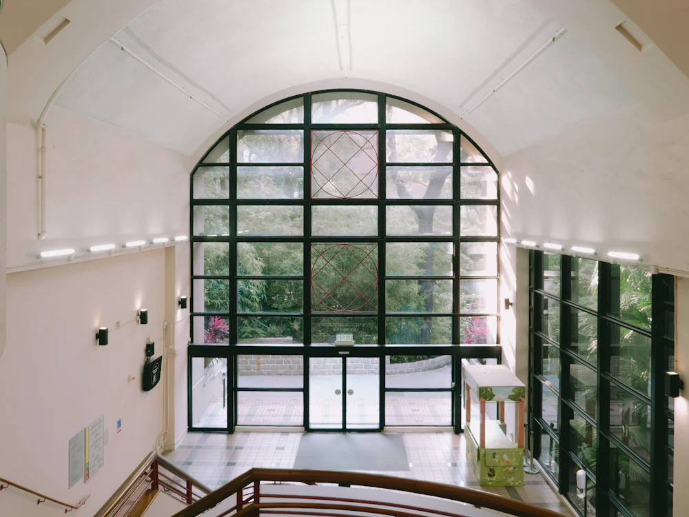
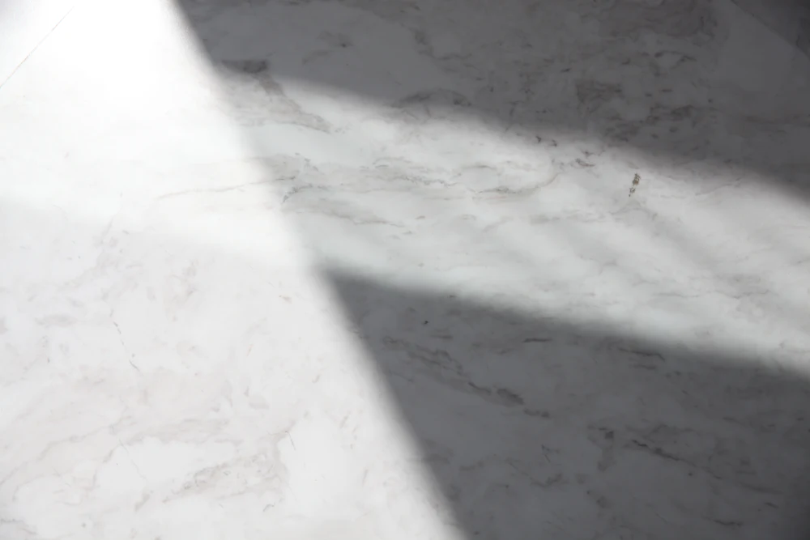

HypnothérapeutePorcelette
Aurore Nussbaum
« Chaque accompagnement est unique, adapté à votre rythme et à vos besoins. »
Sur rendez-vous 07 81 45 23 28
IL’approche
Je crois profondément que chacun a en lui la capacité de changer et de s’épanouir.


Ce moment est dédié à instaurer un climat de confiance et d’écoute, afin que vous vous sentiez en sécurité et à l’aise.
La séance se déroule dans une atmosphère apaisante, et vous êtes guidé progressivement vers un état de relaxation profonde, où votre esprit peut accéder à ses propres ressources pour amorcer les changements désirés tout en douceur.
Au fil des séances, vous pourrez constater des améliorations concrètes dans votre quotidien ainsi qu’un développement de vos capacités, qu’il s’agisse de gestion des émotions, de confiance en vous, ou d’autres aspects de votre bien-être personnel.
- 01
Détente et relaxation
Un temps pour relâcher, dans une atmosphère apaisante.
- 02
Gestion des émotions
Apprendre à accueillir ce que vous ressentez, à votre rythme.
- 03
Confiance en vous
Découvrir et libérer votre plein potentiel, accompagné avec bienveillance.
- 04
Vos ressources intérieures
Avancer vers vos objectifs en vous appuyant sur ce qui est déjà en vous.
IILa séance
Le déroulé
Première séance 1 h 30 à 2 hSéances de suivi 1 h à 1 h 30
-
Le premier rendez-vous
Lors de la 1ère séance d’hypnose, qui dure environ 1 h 30 à 2 h, nous prenons le temps d’explorer en profondeur vos besoins et vos attentes.
Première séance · 1 h 30 à 2 h
-
Vos objectifs
Mon objectif est de vous accompagner vers un mieux-être durable en exploitant vos ressources intérieures et en vous aidant à atteindre vos objectifs personnels.
-
La séance
Mon accompagnement est fondé sur la bienveillance, l’écoute et la personnalisation ; il repose sur l’hypnose ericksonienne et conversationnelle, axée sur la détente et la relaxation.
-
Le suivi
Les séances de suivi, d’une durée d’1 h à 1 h 30, sont spécifiquement conçues pour continuer à travailler sur vos besoins, vos objectifs et pour renforcer les changements initiés.
Séances de suivi · 1 h à 1 h 30
IIICe que vous y trouverez
Un temps pour soi
Photos d’ambiance : les images de votre cabinet prendront leur place.




IVTarifs
Les séances
- Séance d’hypnothérapie60 € à 90 €
- Rendez-vous
- Sur rendez-vous
- Première séance
- 1 h 30 à 2 h
- Suivi
- 1 h à 1 h 30
- Règlement
- Espèces, chèque ou PayPal
VÀ propos
Aurore Nussbaum
Hypnothérapeute à Porcelette
J’ai découvert un outil incroyable qui a profondément contribué à ma transformation personnelle.
Désireuse de mieux comprendre cette approche, j’ai commencé à pratiquer l’hypnose pour moi-même.
Cette expérience m’a inspirée à me former davantage afin d’accompagner les autres vers le changement et le mieux-être ; pour cela j’ai choisi l’école EHTN.
Je suis prête à vous accompagner et vous guider avec bienveillance afin que vous puissiez découvrir et libérer votre plein potentiel.

VIRendez-vous
Prenons rendez-vous
À l’image du cerf, avancez avec calme et assurance vers votre transformation intérieure.
07 81 45 23 28- Lieu
- 57890 Porcelette
- Accueil
- Sur rendez-vous
- Horaires
- À compléterIci, vos jours et heures d’ouverture.